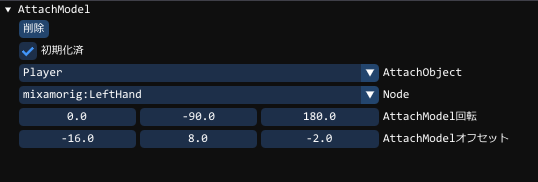

ComponentAttachModelとは
オブジェクトを別のオブジェクトに張り付けたいときに使用します。SpringArmと同等の機能を有していますが、
プレイヤーに、剣を持たせたいなど
別のオブジェクト(剣など)を親(プレイヤー)のノードに張り付けるイメージです。
この場合は、「剣」にこのコンポーネントをAddComponentします
GUIには、次のような設定項目があります。

| AttachObject | 張り付けたいオブジェクトを選択します |
|---|---|
| Node | 張り付けたいモデルのノードを指定できます |
| AttachModel回転 | 自分の座標系に合わせて回転をします(自分の3軸を見ながら調整します) |
| AttachModelオフセット | 親座標に合わせたオフセット調整(ノード位置の3軸を見ながら調整します) |
ComponentAttachModelの使用方法
基本的に銃や装備を最初から複数持たせておき、描画ON/OFFで調整するのが楽です。
ただし、アイテム数が100個などになると持ち方は工夫しなければなりません。
100個の装備を最初からすべて用意して張り付けているとメモリも非常に多く使用してしまいます。
また表示してなくても処理もかかってしまいます
この場合、先に100種類のオブジェクトを用意し、個別にオブジェクトをアイテムデータとしてセーブしておくのも手です。
同じ親であれば、ロードするだけで瞬時にその位置に張り付くでしょう
GUI上でオブジェクトをセーブし、そのオブジェクトをロードする例

GUIでロードテストしたい場合は、セーブしたファイル名と同じ名前のオブジェクトを作成してロードしてください
C++からロードする際には、以下の方法でロードできます
Scene::CreateObjectPtr<Object>()
->Load( オブジェクト名 );
ComponentAttachModelの使用方法の作成方法の例
以下はオブジェクトにAttachModelをつけていますオブジェクトは、あくまでAttachObjectの方向を向きます。
基本的にはアイテムオブジェクトにつけて、親オブジェクトを追跡する時に使います
auto attach_model = obj->AddComponent<ComponentAttachModel>();
AttachModelの取得方法
if (auto attach_model = obj->GetComponent<ComponentSpringArm>())
{
// objにAttachModelコンポーネントがある場合はこのスコープでattach_modelとして使用することができます
}
AttachModelのターゲットのオブジェクト(AttachObject)の設定
// attach_objectのノード名の所をターゲットにする
attach_model->SetAttachObject( attach_object, [ノード名] );
// オブジェクトの名前でもターゲットにできます
attach_model->SetAttachObject( オブジェクトの名前, [ノード名] );
AttachModelのターゲットのオブジェクトの取得
auto obj = attach_model->GetAttachObject(); // objにターゲットが入ります。
AttachModelのターゲットの中心からのずれの指定
attach_model->SetAttachOffset( { 5, 3, 0 } ); // ターゲットの3軸から、X+=5, Y+=3の位置に張り付ける